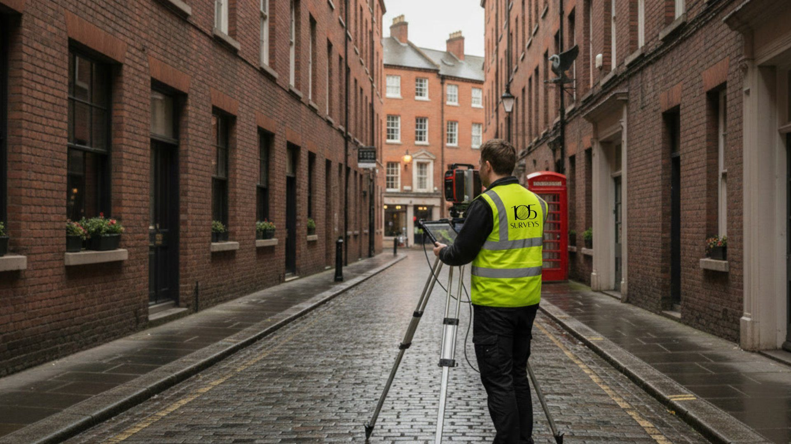

Industry updates, case studies, and expert guides from the 105 Surveys team.

A measured building survey should be the first thing commissioned on any project involving an existing building.
Read moreMeasured building surveys provide architects with accurate drawings essential for planning applications.
Read moreLaser scanning a Grade II listed building to deliver accurate surveys for planning.
Read more